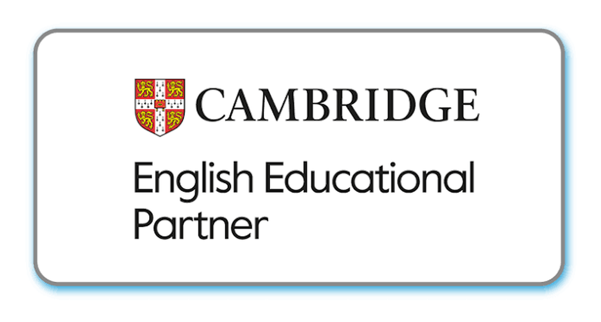
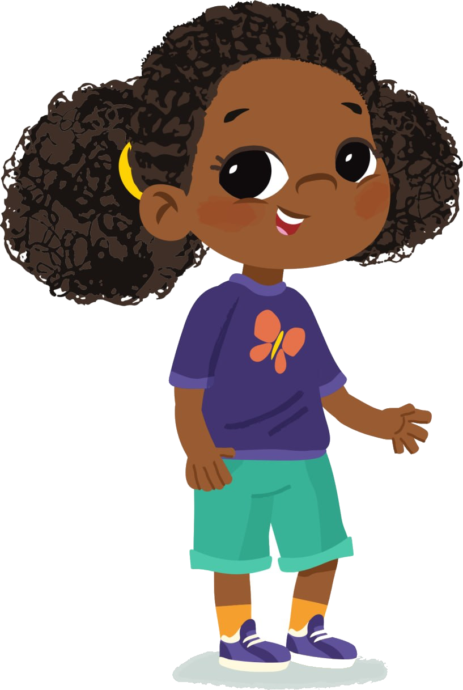
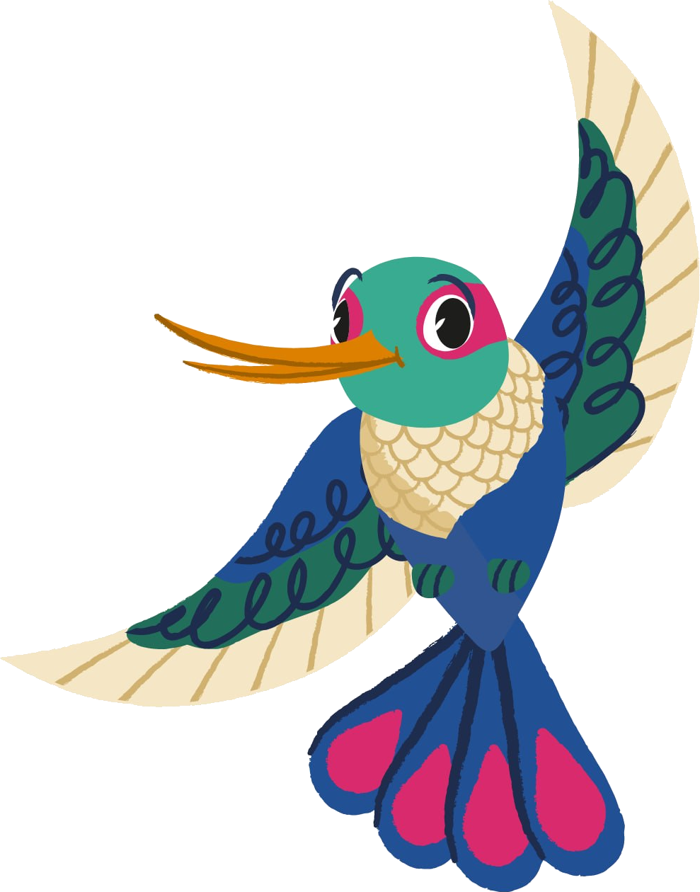
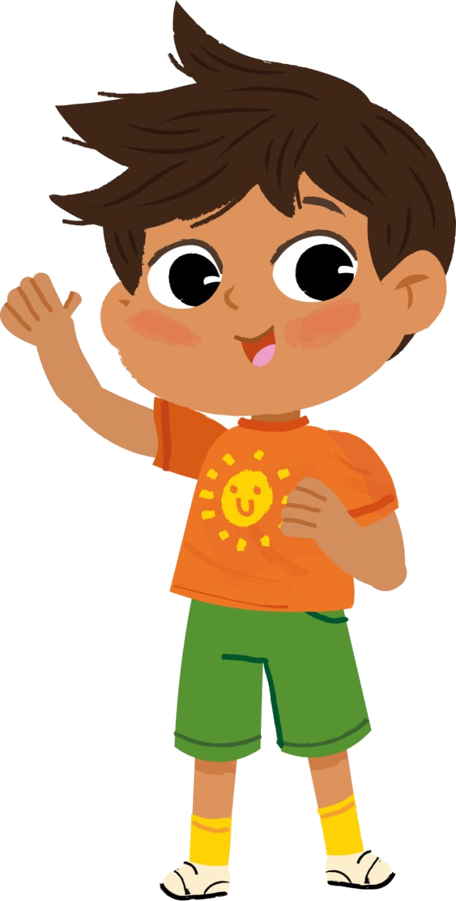

Piloto para o currículo-base. Selecione indicadores observados no mês: o texto familiar é gerado automaticamente a partir da matriz mensal.
Dados do relatório
Este material acompanha um recorte do percurso mensal. Para a visão avaliativa consolidada, use o Report Card do term correspondente.
Engajamento nas experiênciasComo participou das propostas do mês.
Compreensão e respostaResposta a linguagem, rotina e propostas.
Uso do inglêsGestos, escolhas, palavras ou frases apoiadas.
Exploração e descobertaCuriosidade, investigação e criação.
ConvivênciaRelação com pares, adultos e materiais.
Autonomia do períodoPequenas ações possíveis na rotina.
O gerador produz o texto automaticamente. Antes de salvar, confira apenas os dados de identificação e selecione “gráficos/fundos da página” na janela de impressão.
〰
〰

Acompanhamento mensal
Monthly Learning Snapshot
Um retrato das experiências e descobertas vividas neste mês.
StudentNome da criança
ClassLevel 1
SchoolEscola
MonthFevereiro



Uma mensagem para a família
Neste mês, vivenciamos
Um recorte do que foi desenvolvido na matriz mensal do Level 1.
Fevereiro · Welcome and belonging
Como a criança se desenvolveu
Estas observações apresentam o percurso do mês e não substituem a avaliação consolidada do Report Card.